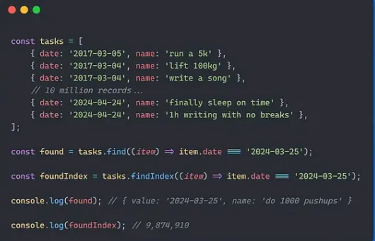
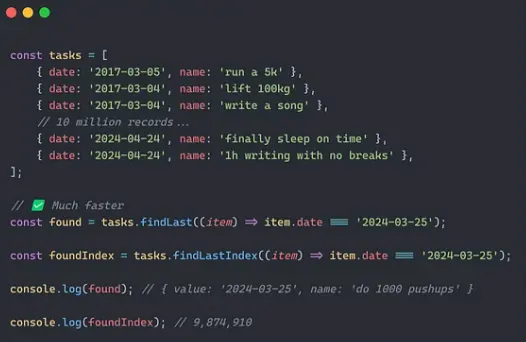

HaoTian · 2024-10-04 19:21:46
ES14 的toSorted()方法使得排序数组并返回一个副本而不改变原数组变得更加容易。
以前我们这样做：
const numbers = [3, 1, 4, 1, 5];
const sorted = [...numbers].sort((a, b) => a - b);
console.log(sorted); // [1, 1, 3, 4, 5]
console.log(numbers); // [3, 1, 4, 1, 5]
现在我们可以这样做 ✅：
const numbers = [3, 1, 4, 1, 5];
const sorted = numbers.toSorted((a, b) => a - b);
console.log(sorted); // [1, 1, 3, 4, 5]
console.log(numbers); // [3, 1, 4, 1, 5]
toSorted()接受一个回调函数来控制排序行为 - 升序或降序，按字母顺序或数字顺序。就像sort()一样。
另一个新的数组方法，用于促进不可变性和函数式编程。
以前 — 使用reverse() ❌：
const numbers = [1, 2, 3, 4, 5];
const reversed = numbers.reverse();
console.log(reversed); // [5, 4, 3, 2, 1]
console.log(numbers); // [5, 4, 3, 2, 1]
现在 — 使用toReversed() ✅：
const numbers = [1, 2, 3, 4, 5];
const reversed = numbers.toReversed();
console.log(reversed); // [5, 4, 3, 2, 1]
console.log(numbers); // [1, 2, 3, 4, 5]
我发现这些不可变方法非常棒，可以不断地链式调用方法，而不用担心原始变量：
const result = numbers.toReversed().toSorted((a, b) => a - b);
函数式编程爱好者无疑会对所有这些新的数组方法感到高兴。 这是.splice()的不可变版本：
const items = [1, 2, 3, 4, 5];
const newItems = items.toSpliced(2, 1, 6, 7);
console.log(newItems); // [1, 2, 6, 7, 4, 5]
console.log(items); // [1, 2, 3, 4, 5]
从第一项开始搜索并不总是理想的：
你可以很容易地看到，对我们的巨大列表从末尾而不是开始搜索会快得多。
有时你必须从末尾搜索才能让你的程序工作。
比如我们想在一个数字列表中找到最后一个偶数，find和findIndex会非常不准确。 调用reverse()也不行，即使它会很慢：
const numbers = [1, 2, 3, 4, 5, 6, 7, 8, 9, 10];
const lastEven = numbers.reverse().find((n) => n % 2 === 0);
console.log(lastEven); // 10（不正确）
所以在这种情况下，findLast()和findLastIndex()方法就派上用场了。
const numbers = [1, 2, 3, 4, 5, 6, 7, 8, 9, 10];
const lastEven = numbers.findLast((n) => n % 2 === 0);
console.log(lastEven); // 10（正确）
这段代码更短、更易读。最重要的是，它产生了正确的结果。
with()是我们快速更改数组元素而不进行任何突变的方法。
以前的常规方式：
const arr = [1, 2, 3, 4, 5];
const newArr = [...arr];
newArr[2] = 6;
console.log(newArr); // [1, 2, 6, 4, 5]
console.log(arr); // [1, 2, 3, 4, 5]
ES14 现在让我们这样做：
const arr = [1, 2, 3, 4, 5];
const newArr = arr.with(2, 6);
console.log(newArr); // [1, 2, 6, 4, 5]
console.log(arr); // [1, 2, 3, 4, 5]